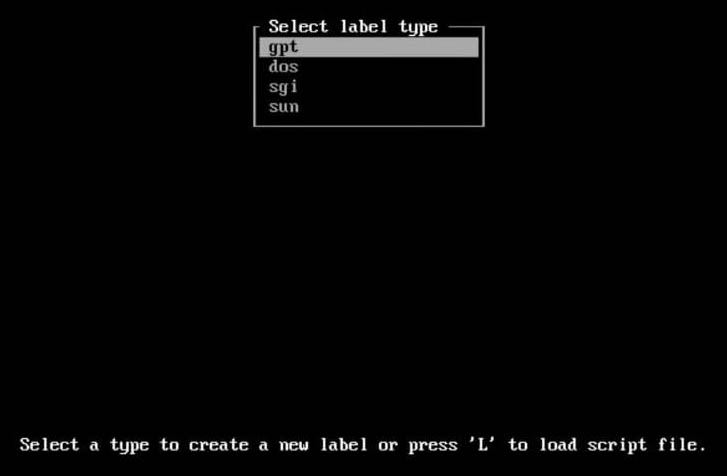
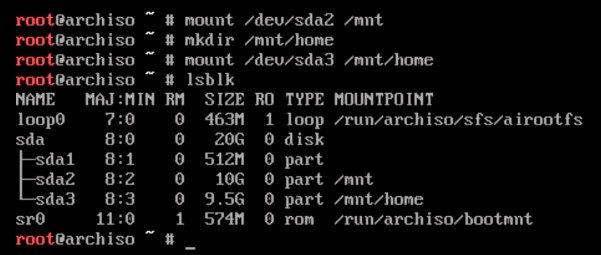

Hoje irei mostrar para vocês, como instalar o Artix Linux, de modo UEFI.
Teclado
A primeira parte da nossa instalação será escolher o nosso layout do teclado.
loadkeys br-abnt2
Isso permite que você selecione o layout do seu teclado apenas nessa seção, ou seja, quando reiniciarmos ele irá voltar ao original.
Um mapa de teclado persistente pode ser configurado em /etc/vconsole.conf. Devemos usar a variavel KEYMAP para especificar o mapa de teclado, pois se ela estiver vazia ou não for definida, o mapa será automáticamente no formato us
/etc/vconsole.conf
KEYMAP=br-abnt2
Particionamento
Agora é a parte mais arriscada da instalação, o particionamento. A primeira coisa que você ira fazer, é listar os seus discos, usando
lsblk
Provavelmente oque apareceu foram dois discos, analize o tamanho deles, o menor, é provavelmente o seu USB, e o maior é o seu HD real, no qual nós iremos instalar o sístema, no meu caso, ele é o /dev/sda
Se você tem muitos discos, é conveniente usar o fdisk para listalos, e escolher o certo: fdisk -l
cfdisk /dev/sda

Cuidado!
Verifique se fez backup de arquivos ímportantes do seu HD, pois eles serão excluidos nos próximos passos.
Use as setas do seu teclado e a tecla enter para criar 3 partições no cfdisk:
- /dev/sda1: Escolha pelo menos 512Mb de espaço (UEFI)
- /dev/sda2: Escolha pelo menos 10GB de espaço (root)
- /dev/sda3: Escolha todo o espaço restante (home)
Se quiser coloque uma LABEL nas partições, mas isso é puramente opcional.
Agora liste as partições novamente para ter certeza de que elas foram gravadas corretamente
lsblk
Formatação
Agora, é hora de formatar as partições, ou seja, deixa-las prontas para instalar o sistema nelas.
A primeira partição a ser formatada deve ser a UEFI, e ela precisa ser formatada com o filesystem FAT.
mkfs.fat -F32 /dev/sda1
As outras duas devem ser formatadas em qualquer sístema de arquivos linux, como btrfs e ext4, hoje eu irei usar o ext4:
mkfs.ext4 /dev/sda2
mkfs.ext4 /dev/sda3
Montar os discos
Agora é hora de montar os díscos. Primeiro, vamos montar /dev/sda2 em /mnt:
mount /dev/sda2 /mnt
Depois vamos criar a pasta home, que é onde nós iremos colocar nossos arquivos pessoais.
mkdir /mnt/home
mount /dev/sda3 /mnt/home
E se listarmos as partições, veremos algo parecido com isso:
Conectar à Internet
Uma conexão funcional de internet, é necessária a partir daqui. Se você está usando uma conexão cabeada, que é o recomendado, ela deve ser configurada automáticamente.
Mas o wifi deve ser configurado pelo usuário, na qual faremos daqui a pouco. Para verificar se você está conectado a internet, digite:
ping -c4 gnu.org
A saída deve ser algo parecido com 64 bytes from...
Instalando a base do Sístema
Nessa instalação, irei usar o OpenRC como init system, pois ele é mais amigável ao usuário.
basestrap /mnt base base-devel openrc elogind-openrc wpa_supplicant dhcpcd
Escolhendo e Instalando um kernel
O Artix oferece três opções de kernel: linux, linux-lts, e linux-zen. eu recomendo instalar ou o linux normal, ou o linux-lts, na qual tem mais estabilíde.
basestrap /mnt linux linux-firmware
Ou
basestrap /mnt linux-lts linux-firmware
Agora, use o fstabgen para gerar um arquivo /etc/fstab
fstabgen -U /mnt >> /mnt/etc/fstab
E finalmente, iremos entrar no sistema em si.
artix-chroot /mnt
Configurando a base do sístema
Relógio do sistema
Para configurar o time zone:
ln -sf /usr/share/zoneinfo/Regiao/Cidade /etc/localtime
Não se esqueça de mudar Regiao/Cidade, no meu caso fica:
ln -sf /usr/share/zoneinfo/America/Sao_Paulo /etc/localtime
Depois:
hwclock --systohc
Localização
Agora, iremos editar um arquivo, para isso, deveremos instalar um editor de texto. para iniciantes eu recomendo instalar o nano, mas eu írei instalar dois, o nvim e o emacs:
pacman -S emacs nvim
Depois disso, devemos editar o arquivo com:
nvim /etc/locale.gen
E descomentar a linha da sua localização, no cado a minha é:
pt_BR.UTF8 UTF-8
E finalmente gerando seu local com locale-gen:
locale-gen
Bootloader
É hora de configurar o seu bootloader. tome muito cuidado agora:
pacman -S grub os-prober efibootmgr
grub-install --target=x86_64-efi --efi-directory=/boot --bootloader-id=grub
grub-mkconfig -o /boot/grub/grub.cfg
Usúarios
useradd -m usuario
passwd usuario
Configuração de rede
nvim /etc/hostname
meuhostname
nvim /etc/hosts
127.0.0.1 localhost
::1 localhost
127.0.1.1 meuhostname.localdomain meuhostname
E como estamos usando o openrc, devemos editar o arquivo /etc/conf.d/hostname com o nosso hostname:
echo "hostname='meuhostname'" >> /etc/conf.d/hostname
E se optou por não instalar o dhcpcd e o wpa_supplicant antes:
pacman -S dhcpcd or dhclient
Depois devemos instalar e abilitar o connman, que irá gerenciar nossas redes:
pacman -S connman-openrc connman-gtk
rc-update add connmand
Reboot
exit
umount -R /mnt
reboot
Pronto! seu sistema está instalado. ainda nessa semana irei postar um tutorial de pós instalação com interface. até!